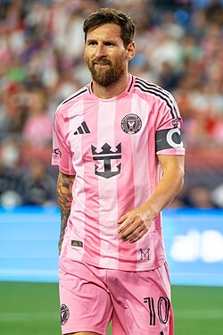
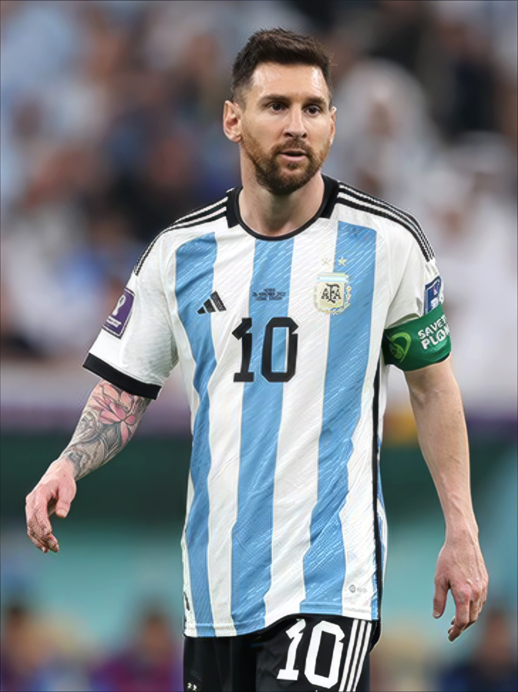
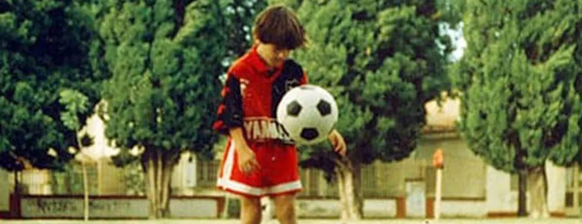
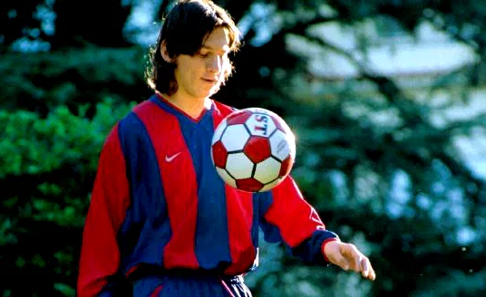
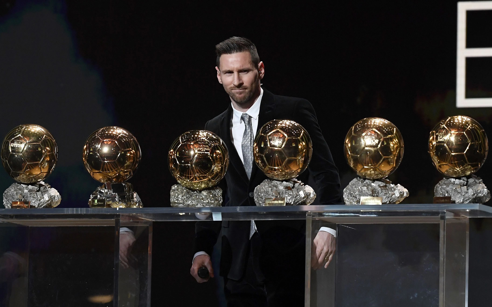
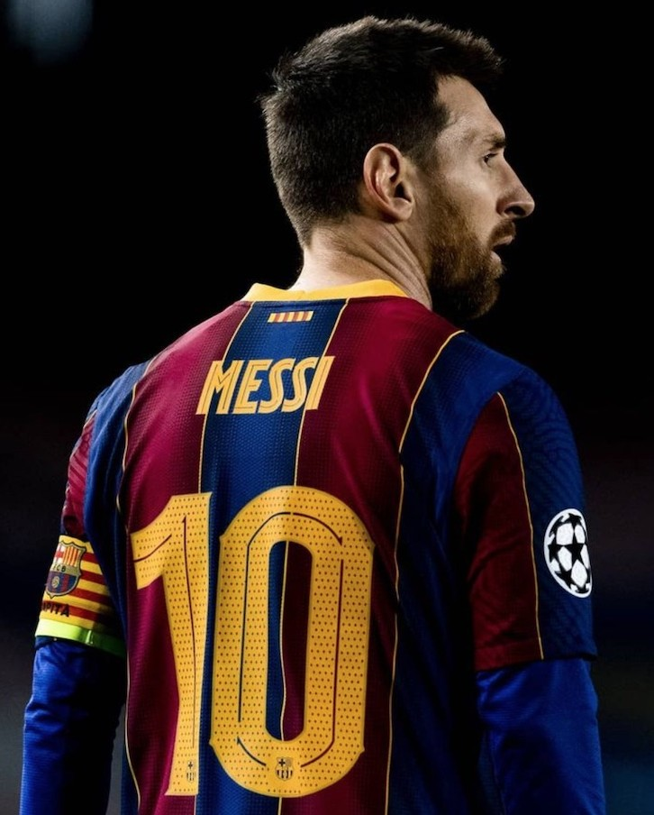
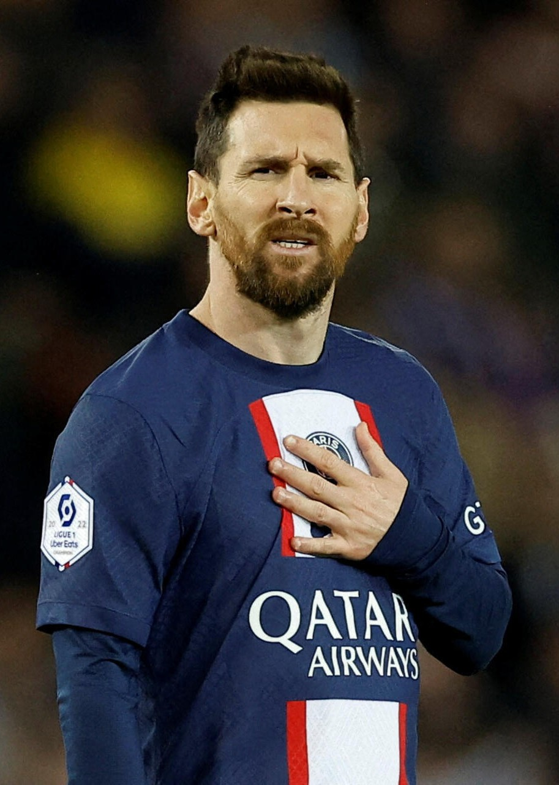

Lionel Messi


Dados da carreira:
- Atividade: 2004 - Presente
- Jogos disputados: 1.142 jogos
- Gols marcados: 900 gols
- Títulos ganhos: 46 oficiais
- Bolas de ouro: 8 Bolas de ouro
- Jogos pela seleção: 196 jogos
- Gols pela seleção: 115 gols
Vida e carreira de Lionel Messi

Lionel Messi nasceu em 24 de junho de 1987, em Rosário, na Argentina. Desde muito cedo, demonstrou um talento excepcional para o futebol, mas enfrentou um grande desafio aos dez anos, quando foi diagnosticado com uma deficiência de hormônio do crescimento. Foi essa dificuldade que o levou ao FC Barcelona, em 2000, já que o clube espanhol se ofereceu para pagar o tratamento dele se ele se juntasse à sua famosa academia de base, a La Masia.

A rápida ascensão de Messi nas categorias de base do Barcelona foi notável. Ele fez sua estreia oficial pela equipe principal em 2004, aos 17 anos. Rapidamente, tornou-se uma peça fundamental no ataque do time, onde formou parcerias lendárias e conquistou uma infinidade de títulos, incluindo vários campeonatos da La Liga, Copas do Rei e Ligas dos Campeões da UEFA. Sua habilidade de drible, visão de jogo e capacidade de finalização foram fundamentais para o sucesso do clube.
As conquistas individuais de Messi são igualmente impressionantes. Ele quebrou o recorde de maior número de Bolas de Ouro conquistadas, recebendo o prêmio oito vezes como o melhor jogador do mundo. Seus recordes de gols e assistências tornaram-se marcos na história do futebol. A rivalidade com Cristiano Ronaldo durante grande parte de sua carreira em Madri e Barcelona elevou o nível do futebol global e definiu uma era.



Após uma longa e gloriosa trajetória no Barcelona, Messi deixou o clube em 2021, em um momento de grande emoção, e seguiu para o Paris Saint-Germain (PSG). Depois de duas temporadas na França, onde continuou a adicionar troféus ao seu palmarés, ele fez uma mudança surpreendente para o Inter Miami, nos Estados Unidos, onde sua presença gerou um enorme impacto na Major League Soccer (MLS). Paralelamente, seu maior sonho foi realizado com a seleção argentina, com a conquista da Copa do Mundo da FIFA de 2022.